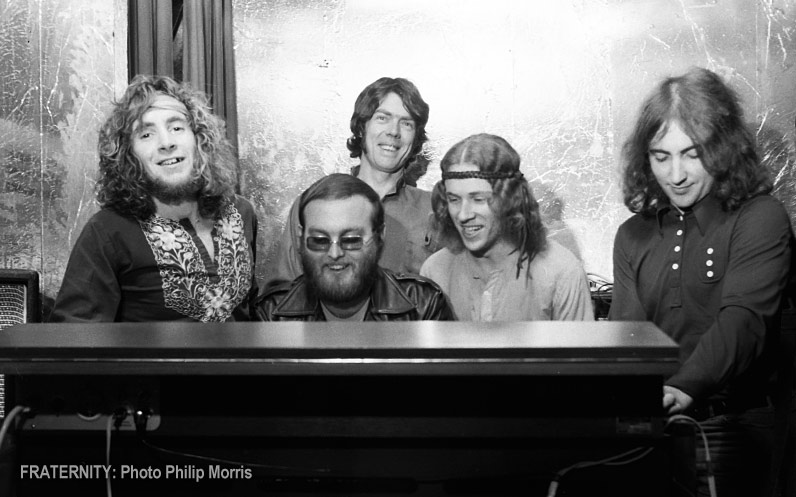

home > news > Date: 09 jan. 2021 - Lost Fraternity Tracks Found Featuring Bon Scott
Lost Fraternity Tracks Found Featuring Bon Scott
09 jan. 2021
Adelaide music promoter and historian Victor Marshall has been heralded as the ‘Indiana Jones’ of Australian Music after uncovering the ‘holy grail’ of lost recordings, Hamish Henry’s vault of now historical Australian recordings, including lost Fraternity tracks featuring AC/DC lead singer Bon Scott. Marshall has worked alongside the surviving members of Fraternity and their manager Hamish Henry to put together the band’s remastered complete recordings. Fraternity’s original albums (Livestock and Flaming Galah) and singles have been remastered from Hamish Henry’s original tapes along with an entire album of new unheard songs featuring the then future lead singer of AC/DC, Bon Scott. The new album is called ‘Second Chance’, named after its title track.
The box set will be released by Cherry Red Records world wide on January 22nd 2021. Space Lab 9 will also be releasing each album in a special edition limited double vinyl later in 2021.
Victor Marshall made the amazing discovery of lost recordings whilst conducting interviews for the upcoming Fraternity biography that he has written. Tracking down each surviving band member and their entourage from their days in Fraternity, Marshall was able to forensically write the band’s story using the band’s own accounts and perspectives. The Fraternity book will be published by Brolga Publishing. The book and the CD boxset will be launched at a 50th Anniversary celebration of Fraternity on Thursday March 18th at Thebarton Theatre. (More info below)
Victor Marshall: “It has been a dream come true to work with one of Australia’s most important pioneering pub rock bands. This project could not have been possible without the generosity of the band (Bruce Howe, John Freeman, John Bisset, Sam See, Mauri Berg, Uncle John Eyers & Tony Buettel) and the band’s original manager Hamish Henry. I hope that all the members of Fraternity will finally receive the recognition they deserve and have their real story told.”
Hamish Henry
Hamish Henry ran the majority of Adelaide’s venues and bands in the late 60’s and early 70’s from his offices on Le Fevre Terrace, Adelaide. Hamish and his businesses including Grape Organisation, Music Power and Caine Promotions ran top venues such as Headquarters Central (95 Grote Street), North (The Octogon Theatre Elizabeth), West, Snoopy’s, The Scene, St Claire and Summer Sound Off (Memorial Drive). Hamish brought international acts to Adelaide promoting the likes of 1910 Fruitgum Co., Jerry Lee Lewis, Deep Purple, Free and Manfred Mann. Eventually Hamish funded and organised the 1971 Myponga Music Festival in which he had Black Sabbath headline with Fraternity and Billy Thorpe. Hamish went on to fund and organise the Meadows Technicolour Fair in 1972. He also managed other Adelaide bands such as Lotus, War Machine, Nostra Damus and Headband. Amongst Hamish’s other activities at this time included successfully running the North Adelaide Galleries.
After leaving Adelaide and moving Fraternity to England, Hamish went on to manage international acts including The Pink Fairies, Focus and Charles Aznavour.
Fraternity
Fraternity quickly rose to prominence after forming in 1970 and became Hamish’s premier headlining band. Led by Bassist Bruce Howe, a hard taskmaster, alongside seasoned guitarist Mick Jurd, the group was known for the quality of their performances and their original material. Other members included the master of the drawbars on the Hammond Organ John Bisset, the best right foot in the business John Freeman on drums, the elusive harmonica extraordinaire Uncle John Eyers, multi-instrumentalist and songwriter Sam See and of course Bon Scott.
Some of the band’s great achievements were:
Winning the 1971 Hoadley’s Battle Of The Sounds (defeating Sherbet and Jeff St John)
Representing the Country Arts Council on the then largest regional tour of SA
Performing with the Melbourne Symphony Orchestra at the Adelaide Festival of Arts
The first Australian rock band to have a devoted national prime time TV special
Performing with bands such as Black Sabbath, Status Quo, Free and Manfred Mann
A 50th Anniversary celebration will be held at Thebarton Theatre
On Thursday 18th March.
Fraternity will be celebrated along with Hamish Henry’s
1971 Myponga Music Festival.
A Pre-sale will be held from 9am ACDT Thursday 7th January 2021
Tickets on Sale to the General Public 10am ACDT Friday 8th January 2021
Fraternity – 50th Anniversary Celebration
Thursday 18th March 2021
50 years ago Adelaide was home to Australia’s no.1 rock band, FRATERNITY
To celebrate Fraternity’s 50th Anniversary, Fraternity’s entire back catalogue has been remastered from Hamish Henry’s original tapes, including a third never before heard album of unreleased songs titled ‘Second Chance’. The Fraternity boxset is complemented with 18,000 word liner notes prepared by Victor Marshall. The band’s official biography written by Victor Marshall is also being launched at this event.
Another of Fraternity’s achievements was performing at the 1971 Myponga Music Festival which was organised by their manager Hamish Henry and the Grape Organisation. A once in a lifetime event will be held at Thebarton Theatre including original 1971 Myponga Music Festival bands such as Mike Rudd’s Spectrum, Matt Taylor’s Chain, Doug Parkinson and more to be announced!
An endless night of hits such as “Seasons of Change”, “I’ll Be Gone”, “I Remember When I Was Young”, “Dear Prudence” and many more!
A special band featuring Vince Contarino (Zep Boys) out front has been assembled to perform Fraternity’s songs live for the first time in almost 50 years. Hamish Henry’s lost Myponga 1971 footage will premiere on the night along with lost photos and footage of Fraternity.
Fraternity will forever be associated with their lead singer, Bon Scott, who would later join AC/DC and enjoy worldwide fame. Bruce Howe, Mick Jurd, John Freeman, John Bisset, Sam See, Uncle John Eyers and Tony Buettel have all left their mark on Australian music and this night is in celebration of their work.
Tickets from Ticketmaster
www.grapeorganisation.com
www.fraternityofficial.com

Archive
09 jul. 2021: Bon Scott Official Website Launched
03 may. 2021: Brian Johnson Performs With Foo Fighters At VaxLive Event
12 apr. 2021: Brian Johnson To Publish Autobiography "The Lives Of Brian" On October 26
07 apr. 2021: AC / DC Picture Disc For Record Store Day June 12
07 apr. 2021: Newly Discovered Interview With Bon Scott From 1976
09 jan. 2021: Lost Fraternity Tracks Found Featuring Bon Scott
23 nov. 2020: "Power Up" En El N. ° 1 En 20 Países
07 oct. 2020: New AC / DC Album "PWR / UP" On Sale November 13
05 oct. 2020: New Single "Shot In The Dark" On Sale Wednesday
30 sep. 2020: AC / DC Confirms New Alignment
10 dec. 2019: Certified "Back In Black" 25 Times Platinum In USA
--without news--
28 nov. 2017: Malcolm Young Se Despidió En Sydney St Mary’s Cathedral